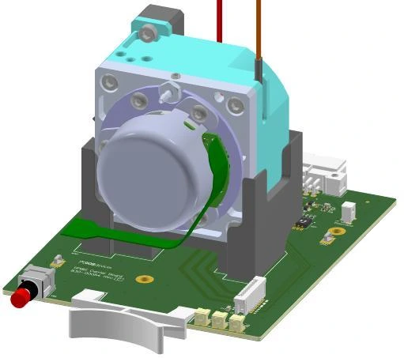
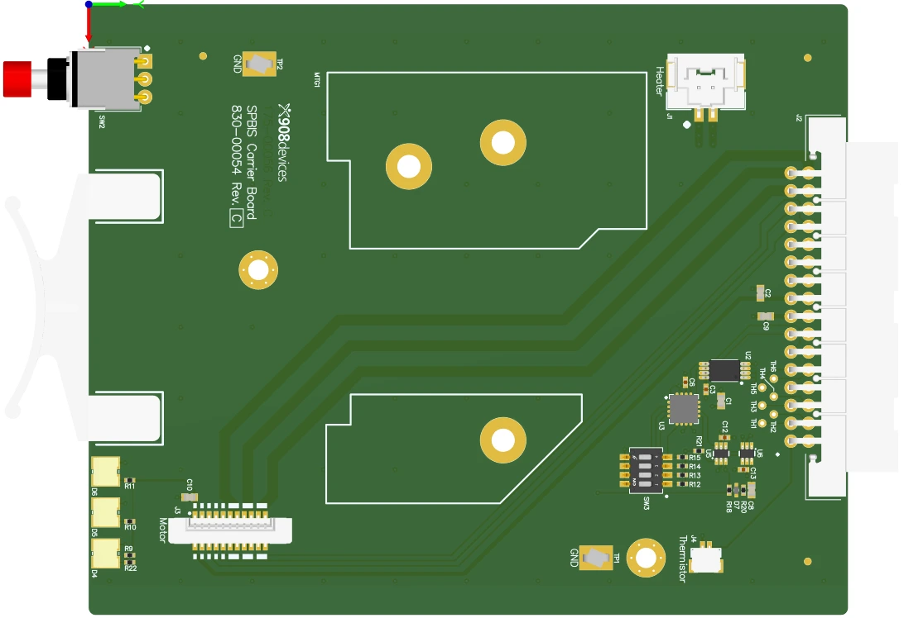
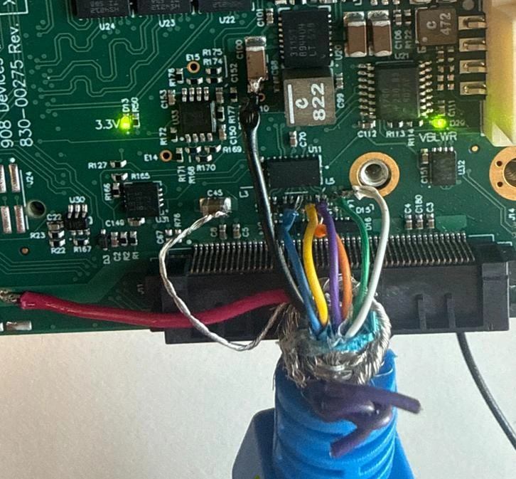
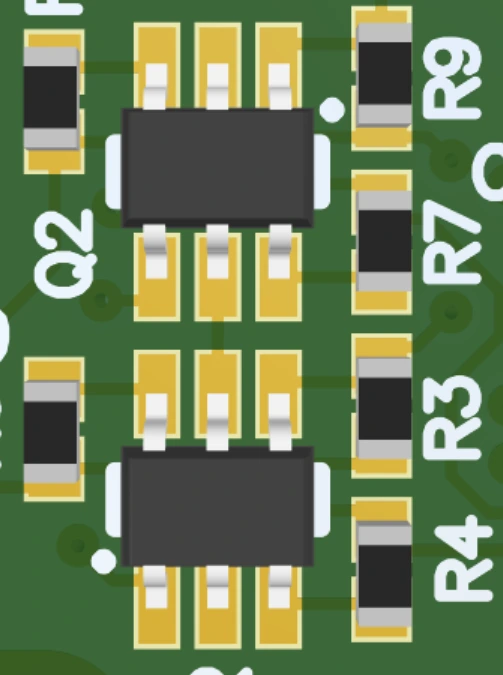
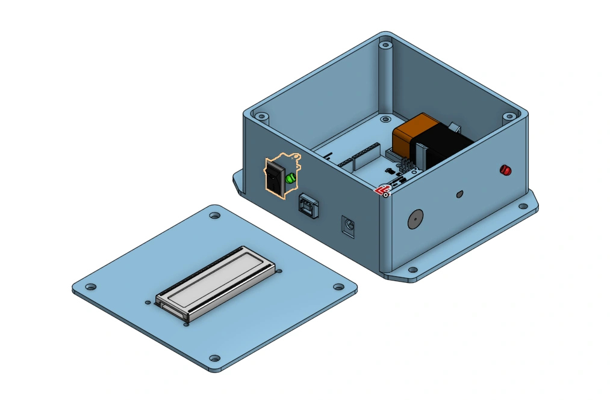

Electrical engineering · Boston University
Electrical
Engineering.
I am Joseph Arens, an electrical engineering student at Boston University with experience in PCB design, hardware debugging, and test-system development.
View projects
01 / Selected work
Engineering at
908 Devices.
Internship work spanning a legacy test-station redesign, live pump telemetry, and USB troubleshooting.
May 2026 – Present

ALTIUM / CARRIER BOARD REV C01 / Hardware + test systems
Vacuum-pump
burn-in station redesign.
Carrier-board redesign, pump-mount development, and a Python monitoring application for a vacuum-pump burn-in rack.
Read the case study
02 / Signal integrity
USB 3.0 signal-path investigation.
Component-by-component rework to isolate a SuperSpeed connection problem.

03 / Root-cause investigation
USB-C water-detection fault analysis.
Tracing a false water-detection fault from controller registers to assembly-sensitive components.
Coursework / Boston University
Course
projects.
An automatic soap-dispenser prototype combining an acrylic enclosure, infrared sensing, and linear actuation.
EK210 · Fall 2025
 TEAM PARLAY / WORKING PROTOTYPE
TEAM PARLAY / WORKING PROTOTYPE04 / Mechanical design + system integration
Automatic soap
dispenser prototype.
A laser-cut acrylic housing, IR sensing, and an actuator-driven bottle pump. I designed the housing and performed most of the final debugging across the structure, code, and wiring.
View project and demonstration
05 / Embedded electronics
Room temperature monitor.
An Arduino temperature monitor with a TMP36 sensor, LCD, and threshold alarms. I designed the enclosure, assembled the electronics, and programmed the device.
02 / Background
Education
and experience.
I am pursuing a B.S. in Electrical Engineering at Boston University, with expected graduation in May 2028. My internship at 908 Devices includes schematic capture, PCB layout, microcontroller firmware, Python monitoring software, and hardware debugging.
I compete in pole vault on Boston University’s Division I track and field team and tutor physics and chemistry. Originally from Stillwater, Minnesota, I currently study and work in Boston.
03 / Contact